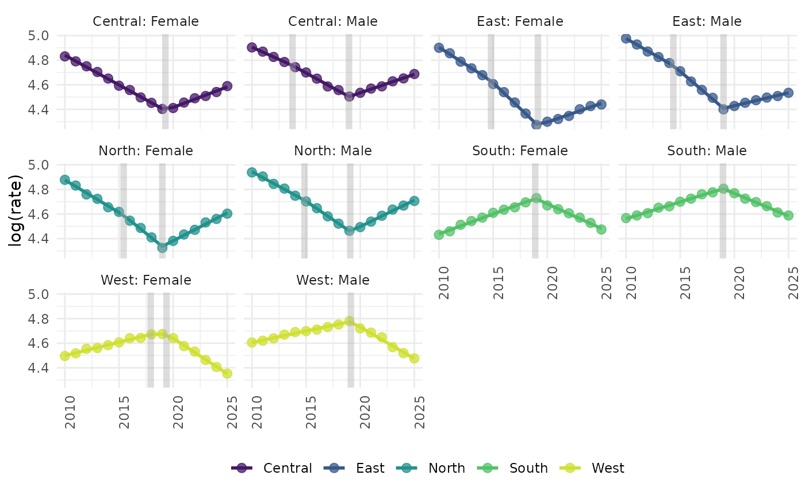
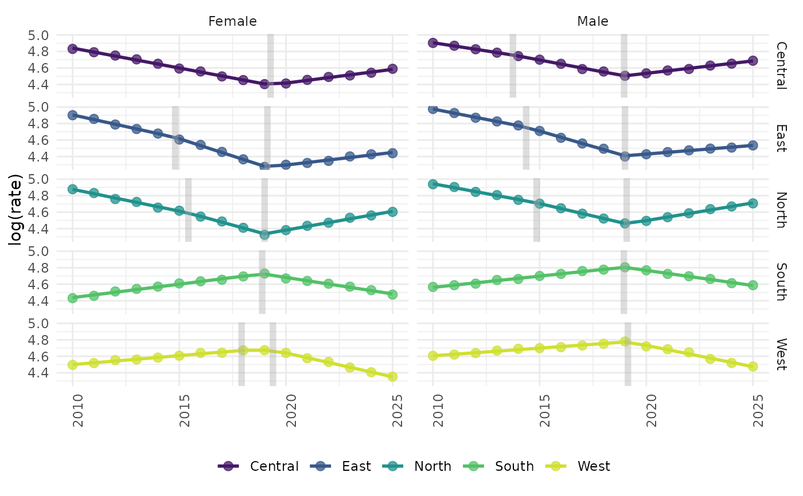
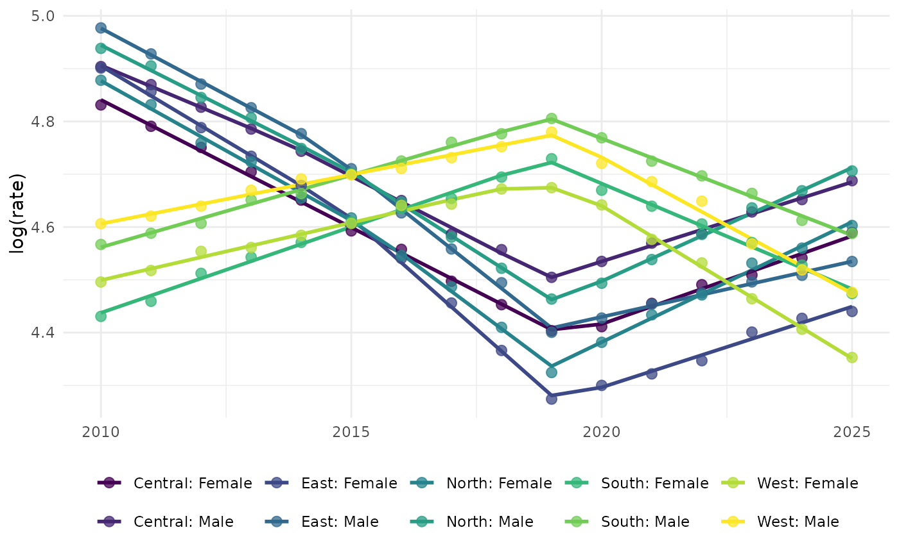
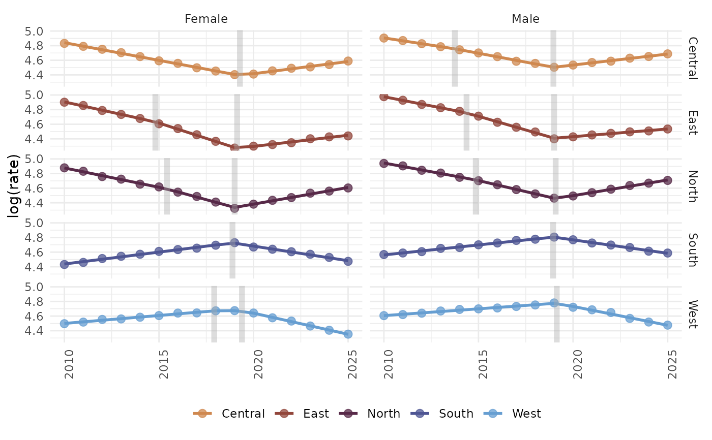
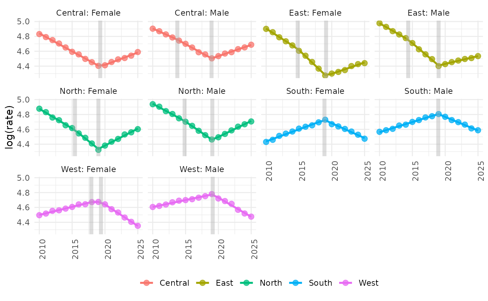

Creates a ggplot showing observed values, fitted joinpoint regression lines, and optional joinpoints.
A list of joinpoint regression models returned by model_jp().
Logical. If TRUE, observed data points are displayed.
Numeric. Size of the observed data points.
Numeric. Transparency level of the observed data points (0-1).
Logical. If TRUE, joinpoints are displayed as vertical dashed lines.
Character. Determines the facet layout: "none" for a single
panel, "wrap" for faceting by group, or "grid" for faceting by group
and subgroup.
Numeric. Number of columns to display when facets = "wrap".
Logical. If TRUE, a colorblind-friendly palette is used.
Character. Name of the colorblind-friendly palette to use. See Details.
A ggplot object showing observed values, fitted joinpoint regression
lines, and optional joinpoints.
Available colorblind-friendly palettes from the cols4all package include:
Diverging palettes:
"managua"
"plasma"
"roma"
"vanimo"
"viridis"
Sequential palettes:
"algae"
"arches2"
"blue_fluoride"
"glasgow"
"tokyo"
# Load example data
data(hiv_data)
# Fit the joinpoint models
mods <- model_jp(
data = hiv_data,
value = hiv_rate,
time = year,
group = c("region", "sex"),
k = 2,
test = TRUE
)
#> Model: Central_Female | Joinpoint(s): 2019
#> Model: Central_Male | Joinpoint(s): 2013.7; 2019.0
#> Model: East_Female | Joinpoint(s): 2014.8; 2019.1
#> Model: East_Male | Joinpoint(s): 2014.4; 2019.0
#> Model: North_Female | Joinpoint(s): 2015.4; 2019.0
#> Model: North_Male | Joinpoint(s): 2014.9; 2019.1
#> Model: South_Female | Joinpoint(s): 2019
#> Model: South_Male | Joinpoint(s): 2019
#> Model: West_Female | Joinpoint(s): 2017.9; 2019.4
#> Model: West_Male | Joinpoint(s): 2019
# Plot results
gg_jpoint(mods, obs = TRUE, jp = TRUE, facets = "wrap")

# Facet by group and subgroup
gg_jpoint(mods, obs = TRUE, jp = TRUE, facets = "grid")
#> Number of columns will be ignored when facets 'none' or 'grid'.

# Single panel without joinpoints
gg_jpoint(mods, jp = FALSE, facets = "none")
#> Number of columns will be ignored when facets 'none' or 'grid'.
#> Joinpoint(s) position(s) will not be displayed.

# Use a different colorblind-friendly palette
gg_jpoint(
mods,
obs = TRUE,
jp = TRUE,
facets = "grid",
cb = TRUE,
cbpal = "managua"
)
#> Number of columns will be ignored when facets 'none' or 'grid'.

# Use default ggplot2 palette (can be changed using `scale_color_`)
gg_jpoint(
mods,
cb = FALSE
)
#> Colorblind-friendly palettes disabled, use `scale_color_`functions to set line and point colors.
